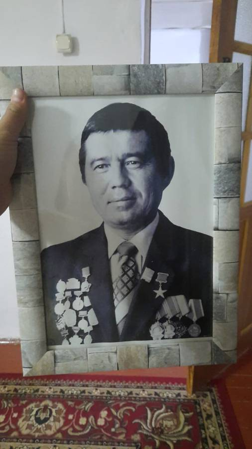
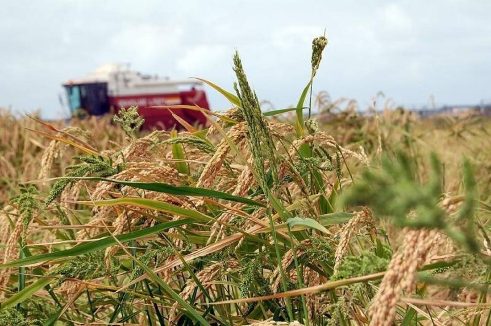
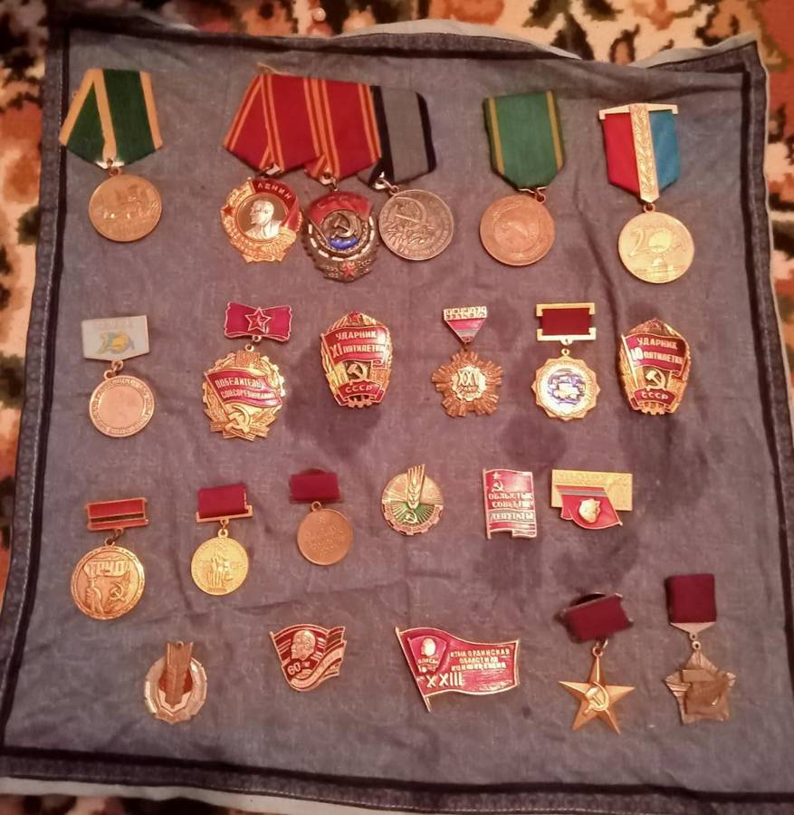
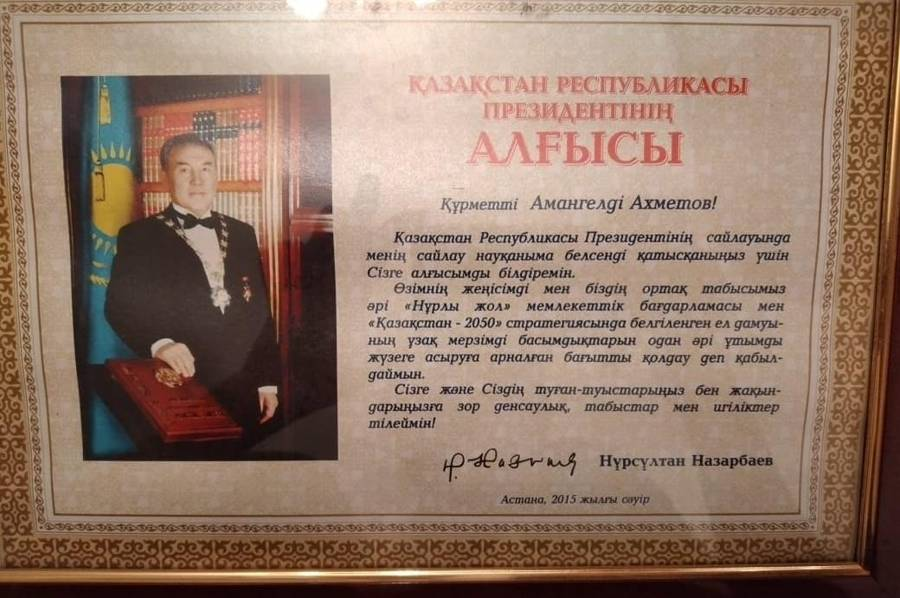
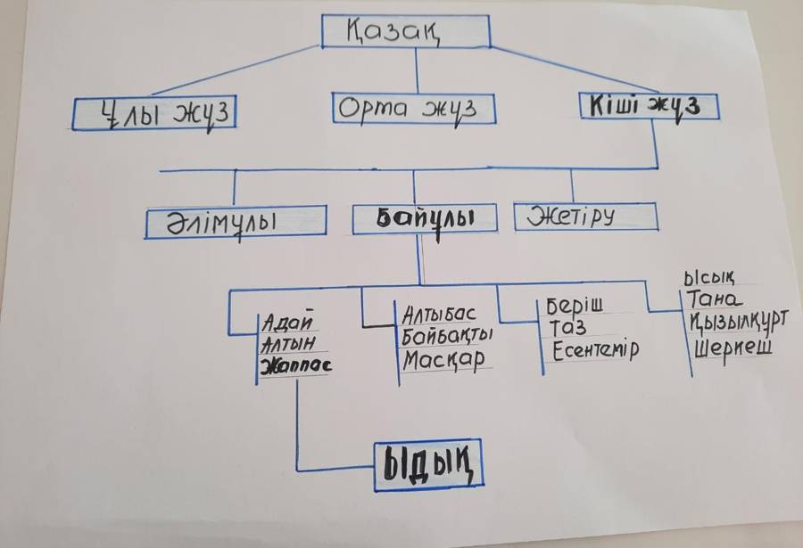
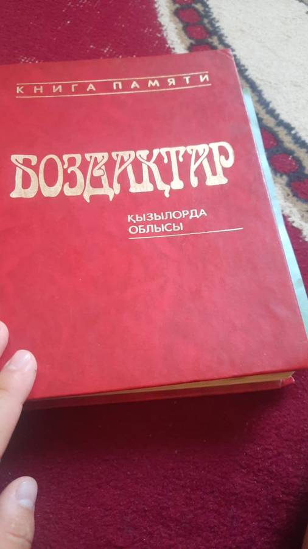
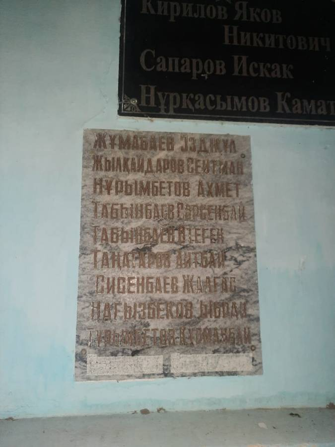
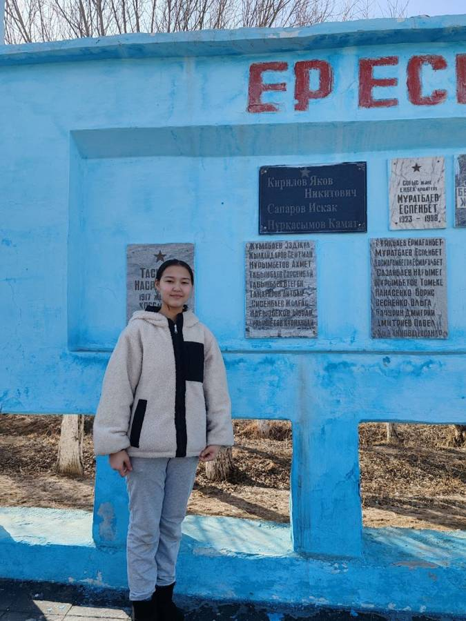

Амангелді
Ахметов
Сыр бойының күріш алқабында жарты ғасырға жуық еңбек етіп, елге танылған механизатор. Отбасылық мұрағат пен жоба материалдары негізіндегі цифрлық тарихи портрет.


Соғыс жылы туған, еңбекпен ер атанған
Ахметов Амангелді 1942 жылы 10 мамырда Сырдария ауданындағы Жамбыл атындағы колхозда дүниеге келген. Әкесі Ахмет, інісі Жұмақадіржан майданда жүргенде туған ұлына «соғыстан аман-есен келер ме екен» деген тілекпен Амангелді деп ат қойған.
Мектепті бітірер-бітірместен әкесінің жолын қуып, отбасын асыраймын деген мақсатпен шопырлыққа оқыды. Кейін механизатор, жүргізуші, ал 1968 жылдан күрішшілер бригадасының басшысы болды. Ел жұрты іскерлігіне қарай құрмет көрсетті, атағы жер жарды.
«Соғыстың уақыты, ашқұрсақ болып өстік. Әкеміз ешкінің қақпанға түскен мөлінің терілерінен бас киім тігіп беруші еді. Әлі есімде, бір көпейкені бес жыл кигенім. Көтерем күй кештік, тұрмыс тауқыметі, соғыс бізді ерте есейтті.»
Амангелді атаның өз сөзінен · жоба сұхбаты
Звено жетекшісінен Еңбек Ерінің жолына дейін
- Алдымен машинаның қыр-сырын меңгерді.
- Егіс звеносына мүшелікке кірді.
- Шаруашылық төрағасы Ким Дон Чер оны звено жетекшісі етті.
- «Ақ күріштің атасы» Ыбырай Жақаевтың еңбек тәжірибесін қолданды.
- 7 адамнан тұратын звеноны алға сүйреп, атағы шықты.
1942 жылдан 2012 жылға дейін
Дүниеге келді
10 мамыр. Сырдария ауданы, Жамбыл атындағы колхоз.
Механизатор мамандығы
Қызылорда механизаторлар мектебін бітіріп, Жамбыл атындағы колхозда механизатор болып жұмыс істеді.
Машина сынау станциясы
Қызылорда аймақтық машина сынау станциясында жүргізуші болды.
Күрішшілер бригадасы
Жаңадан құрылған күрішшілер комплексіндегі механизаторлар бригадасында еңбек етті. Кейін бірнеше жыл бойы осы бригаданы басқарып, күріш жинау жоспарын асыра орындады. Кей жылдары әр гектардан 100–120 центнерге дейін өнім алынды.
Социалистік Еңбек Ері
Оныншы бесжылдықта астық өнімдерін артығымен орындағаны үшін КСРО Жоғарғы Кеңесі Президиумының Жарлығымен Еңбек Ері атағы берілді (Жарлық күні — 19 ақпан, Уикипедия деректері). Жоба материалдарында ата атақты екі рет иеленген деп көрсетілген.
70 жылдық мерейтойы
Облыс әкімінің алғыс хаты мен пәтер алуға 4,5 млн теңгелік қаржы сертификаты табысталды, «Нива» жеңіл автокөлігі сыйға тартылды.
Еңбегі мойындалған жылдар
Социалистік Еңбек Ері
Астық өнімдерін артығымен орындағаны үшін. Жоба деректері бойынша — екі рет.
Еңбек Қызыл Ту ордені
Бригада күріш жоспарын асыра орындағаны үшін.
Ленин ордені
Еңбектегі жетістіктері үшін.
Ыбырай Жақаев атындағы жүлде
Үш рет иеленген.
Облыс әкімі мен Президент
Облыс әкімінің және Қазақстан Республикасының Президенті Н. Назарбаевтың алғыс хаттары.
«Нива» және 4,5 млн теңге
Мерейтой қарсаңында сыйға тартылған автокөлік пен пәтер алуға арналған сертификат.


«Жеті атасын білген ұл жеті жұртқа жен айтар»
Қазақ баласына 7–9 жасынан бастап әкесінен бастап ағайын-туысын, нағашы-жұртын, ел-жұртын таныстырған. Жеті атаны білу — заң болған. Жоба авторына да ата-анасы шежірені күнделікті үйретеді.
Жоба авторы Жаппас руынан шыққан батырларға да тоқталады. Шежіре бойынша Баймұрат батыр былай жіктеледі:
Жаппас → Тәнке → Қалқаман → Есенбай → Әжім → Байбөрі → Баймұрат
Баймұрат батырдың баласы Байтүгел жауға қарсы «Баймұрат» деп ұрандап шауып, жеңіске жеткен. Содан Жаппастың ұраны «Баймұрат» болсын деген пәтуаға келген. Жас ұрпақтың өз руын білгенінің зияны жоқ, бірақ рушылдықтан туындайтын жікшілдіктен аулақ болғаны жөн.

Атаның әкесі — Нұрымбетов Ахмет



Ата, әке, бала, немере, шөбере
Еңбек рухында тәрбиеленген ата мен Шырынкүл әже өсірген ұрпақ — жобаның ең тірі мұрасы. Жоба слайдында үлкен отбасының мүшелері бейнеленген.
Жоба слайдындағы есімдерді көру
Мұрағаттағы суреттер
Атадан сұра
Амангелді ата туралы сұрақ қойыңыз. Көмекші тек жоба материалдарындағы деректерге сүйеніп жауап береді және дерегі жоқ сұраққа «білмеймін» дейді.
Көмекші — жоба деректерінен іздейтін құрал, ол Амангелді атаның өзі емес. Жауаптарды жоба материалдарымен салыстырып отырыңыз.
«Аты аңызға айналған ата»
Мақсаты. Ата-бабамыздың қалдырған асыл мұрасын қадірлеп, жоғалғанды жаңғыртып, олардың ерлігі мен батырлығының келешек ұрпақ үшін маңыздылығына көз жеткізу.
«Кешегі күнсіз келешек жоқ». Бүгінгі жас ұрпақты ата-бабалардың мол мұрасымен сусындату — біздің міндетіміз.
Бұл сайтта жасанды интеллект қалай қолданылды
- Сайтты құрастыру. Беттің дизайны мен коды ЖИ (Claude) көмегімен жасалды. Мәтіндер жоба презентациясындағы деректерден алынды.
- «Атадан сұра» көмекшісі. Жауаптар тек жоба деректерінен алынады; дерек болмаса, көмекші солай деп айтады.
- Фотосуреттер. Барлығы отбасылық және мектеп мұрағатынан, ЖИ-мен өңделмеген.
Дереккөздер: жоба презентациясы, атамен және Шырынкүл әжемен сұхбат, «Боздақтар» кітабы, «Ер болам десең еңбек ет» газет мақаласы, Уикипедия мақаласы, №218 мектеп музейі.